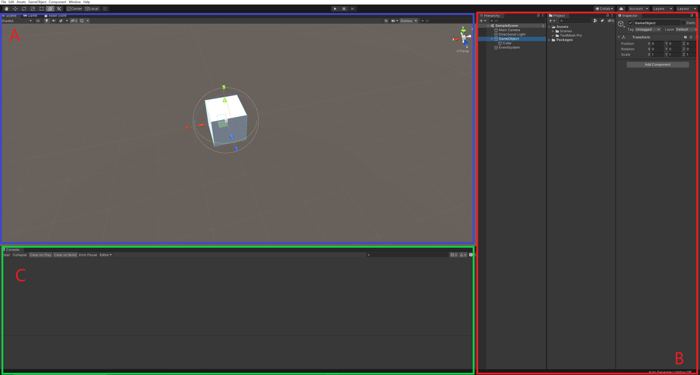
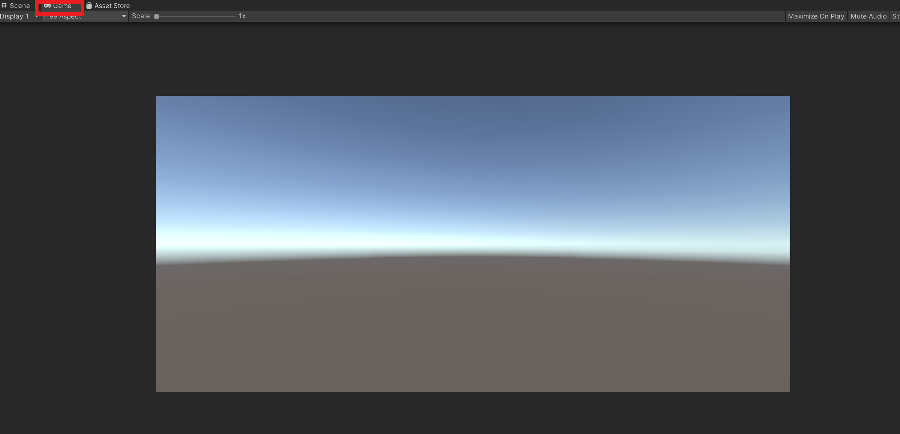
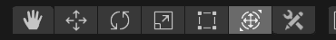
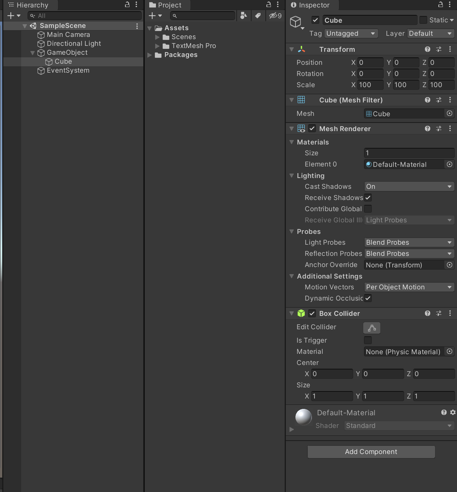
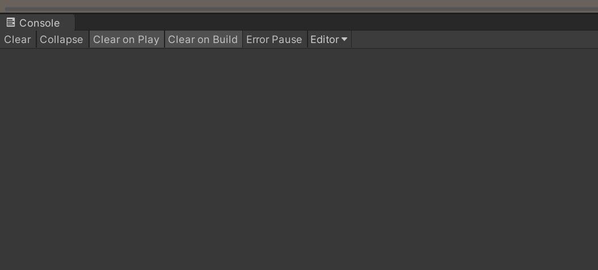

一、Unity引擎的介绍
本篇将会向大家介绍一款游戏引擎，Unity3D。Unity3D是由Unity Technologies研发的游戏引擎,可用于开发跨平台的电子游戏、基于WebGL技术的网页平台，除此之外还可用于建筑可视化，2d，3d动画制作，美术设计等领域。
二、Unity界面介紹

Unity的界面大致可以分为上图中的A，B，C，3部分。
1、Scene视图和Game视图

Scene视图中展示的是程序未运行时的情景，在这个视图中会显示当前情景中的所有对象，包括它们的位置，方向和材质。在这里你可以根据需求对情景中的物体做出相应的修改。

Game视图中展示的时程序运行起来的情景，在这个视图中你可以预览搭建好的情景是如何呈现的。

再往上则是菜单栏和工具栏，这里着重介绍这六个工具，在之后的开发中将频繁用到。这六个工具可以控制当前情景中物体对象的选择\移动\旋转\缩放\坐标，对应快捷键分别为Q，W，E，R，T，Y。
2、Hierarchy视图、project视图和inspector视图

Hierachy视图是用来展示情景内所有物体的属性和结构，在这个视图中可以添加\删除物体对象
Project视图是展示整个工程项目结构的视图，在这里主要存放项目中使用的脚本，图像，音频等资源
Inspector视图是展示选中物体详细信息的视图，当在Hierachy视图选中物体时，Inspector视图会自动显示选中物体的详细属性，如坐标\材质\脚本等信息，同时也是在这个视图里修改物体的属性来满足各种需求。
3、Console视图

Console视图是展示程序运行中抛出的警告\错误信息，当然你也可以在代码中使用Debug等方法来打印想要的信息。通过这信息展示可以有效的排查问题，是有效的debug方式之一。